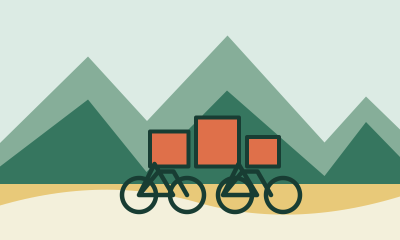

Recorridos guiados
Acompáñanos en nuestras rutas nocturnas y de fin de semana. Todas nuestras salidas incluyen guía bilingüe y seguro de asistencia médica durante el trayecto. Descubre historias fascinantes y rincones ocultos de la ciudad junto a nuestro equipo.
Consulta recorridos y precios

Taller básico y mantenimiento
Si tienes tu propia bicicleta, te ayudamos a mantenerla a punto. Nuestro taller incluye ajuste de frenos, lubricación y calibración de aire sin costo adicional en tu primera revisión. Mantén tu bicicleta siempre suave y segura al rodar.